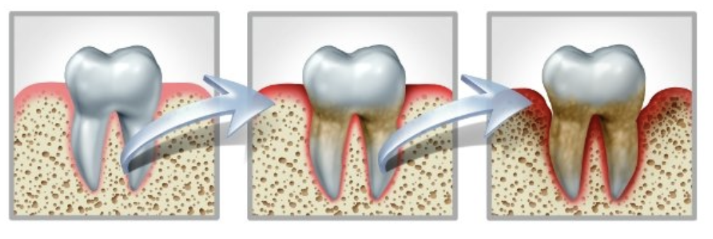

¿Sabías que…?
En España, según la Encuesta Nacional de Salud 2005, entre el 85-90% de la población mayor de 35 años padece estas patologías en algún grado, principalmente gingivitis. La manifestación más destructiva o periodontitis afecta al 30-38% de los adultos mayores de 35 años.
¿Qué más deberías saber?
Conoce estos términos nuevos:
La placa bacteriana: es el factor principal de las enfermedades periodontales o de mis encías. La placa es una fina y nociva capa o película, se forma continuamente como producto de las bacterias que habitan en nuestra boca (mas de 700 tipos) y su acumulación provoca la gingivitis.
Gingivitis: es una de las patologías mas frecuentes en el ser humano. Es reversible y puede aparecer a cualquier edad. Esta inflamación superficial de la encía se puede sanar con una limpieza profesional. Sin embargo, si la gingivitis persiste y si hay otros factores como el estrés, tabaco, diabetes o una posible predisposición genética, acabará manifestándose una periodontitis. El primer signo más claro de la inflamación de las encías es el sangrado, sea durante el cepillado o espontáneo. Una encía sana no sangra.
Periodontitis (Piorrea): es una infección profunda de la encía y el resto de tejidos que sujetan el diente y que lleva a una perdida ósea. Además del sangrado con el cepillado o espontáneo, se puede notar hipersensibilidad al frío, movilidad o separación de dientes, retracción de la encía y mal aliento.
¿Qué consecuencias tienen?
Si no se tratan adecuadamente, ni existe un mantenimiento periodontal periódico, estas patologías irán agravándose hasta provocar la pérdida de los dientes. Además, la evidencia científica constata que la infección periodontal repercute en la salud general: incrementa el riesgo cardiovascular, complica el control de la glucemia, favorece las enfermedades pulmonares y las complicaciones durante el embarazo aumentando el riesgo de un parto prematuro. Las personas que fuman tienen hasta tres veces más riesgo de padecer periodontitis y como el tabaco dificulta y reduce el flujo sanguíneo, en ocasiones el sangrado de las encías no se manifiesta, lo que dificulta su detección precoz. Por ello, es conveniente que los fumadores presten una especial atención a la salud de sus encías, además de intentar dejar de fumar.
¿Cómo se tratan?
El control de la placa bacteriana es la mejor prevención de las enfermedades periodontales. Además de las visitas regulares al dentista, cada persona debe responsabilizarse de su higiene bucodental diaria mediante el cepillado de dientes y espacios interdentales, por lo menos dos veces al día. En nuestra Clínica te explicáramos cómo mejorar las técnicas de cepillado y el uso de seda o cepillos interdentales.
Si es gingivitis, se trata mediante profilaxis profesional —”limpieza de boca”—; si es periodontitis, mediante raspado y alisado radicular, limpiando por debajo de la encía. Y en caso de periodontitis avanzadas con pequeñas cirugías. Junto a las limpiezas regulares, el cumplimiento de un adecuado programa de mantenimiento fortalecerá tu salud periodontal y evitará recaídas, garantizando el control de la enfermedad periodontal a largo plazo.
Eliminar la placa bacteriana, la mejor prevención. El mantenimiento, la garantía de salud periodontal.